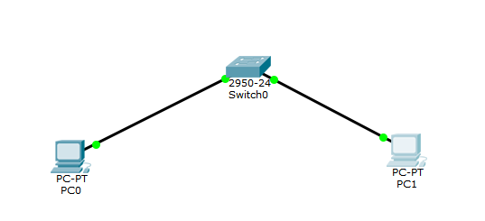
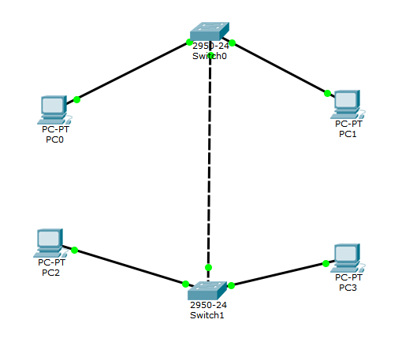
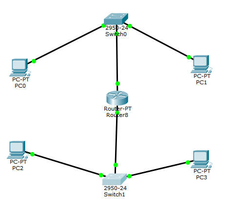

На рабочем поле размещены и соединены коммутатор и два компьютера, настроена адресация на добавленных компьюетрах и выполнена проверка работоспособности сети.

Добавлены еще коммутатор с двумя компьютерами, соединены две подсети и настроена адресация.

Добавлен и соединен маршрутизатор, проверена работоспособность сети.

Добавлена и подключена третья подсеть с компьютером, коммутатором и маршрутизатором. Проверена работоспособность всей сети.